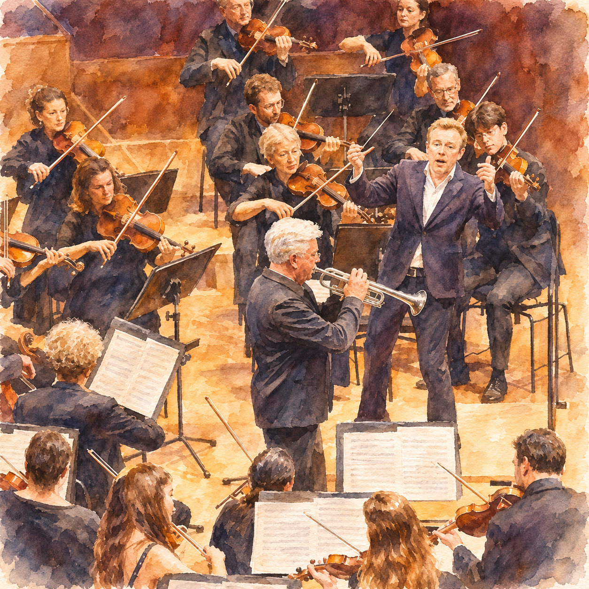
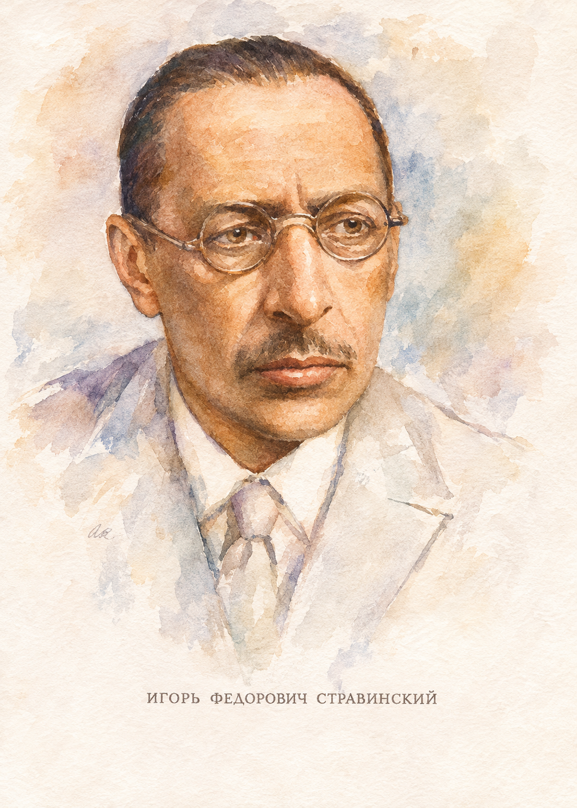
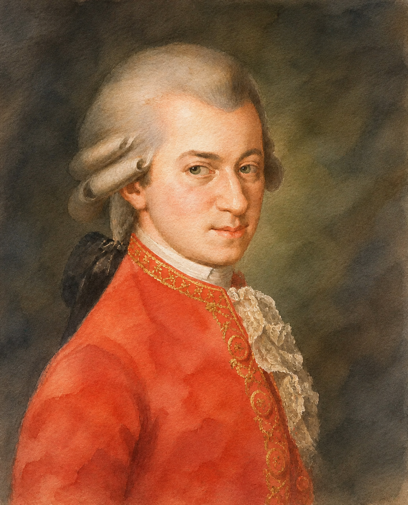
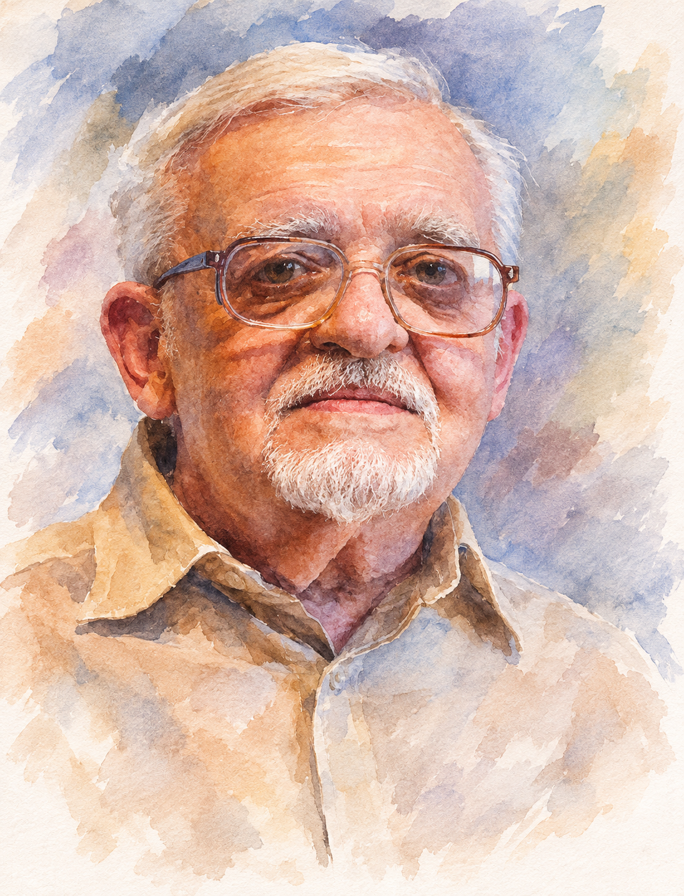
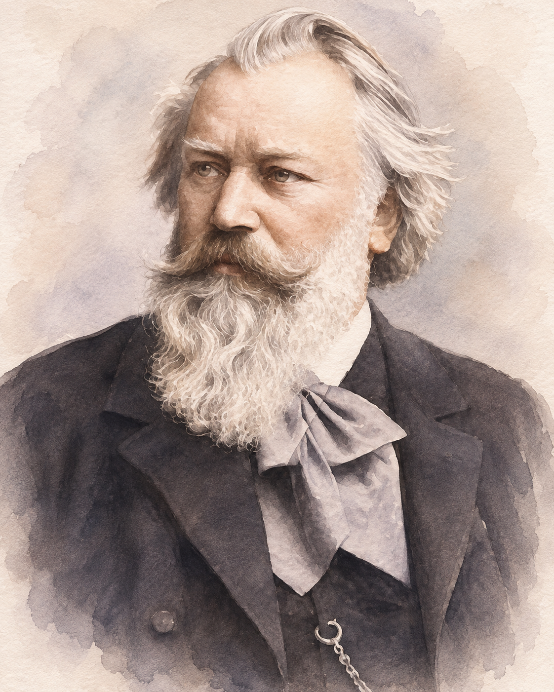

兩場音樂會，兩種聆聽經驗
王羽佳與馬勒室內樂團（Mahler Chamber Orchestra, MCO）在 11 月的臺灣巡演安排兩套截然不同的節目。臺北場以四位作曲家呈現古典形式如何被現代節奏、和聲與配器重新照亮；臺中場則把布拉姆斯兩首鋼琴協奏曲放在同一晚，讓人聽見青年與成熟時期的交響思維。
| 場次 | 公告曲目 | 聆聽問題 |
|---|---|---|
| 臺北 11/22 | 史特拉汶斯基《鄧巴頓橡樹園》；莫札特第二十九號交響曲；普羅高菲夫第一號《古典》交響曲；卡普斯汀第四號鋼琴協奏曲。 | 既有的形式，如何因節奏、配器與和聲而得到新生命？ |
| 臺中 11/24 | 布拉姆斯第一號鋼琴協奏曲，Op. 15；第二號鋼琴協奏曲，Op. 83。 | 鋼琴與樂團是競爭，還是共同構築一部交響曲？ |
臺北場早期宣傳資料曾列崔法斯曼《爵士組曲》；本文依馬勒室內樂團現行節目頁所列的《鄧巴頓橡樹園》整理。曲目與曲序仍以現場公告為準。臺北場官方節目 ↗ 臺中場官方節目 ↗
從鋼琴引領的合奏
王羽佳出生於北京，後於費城柯蒂斯音樂學院師從 Gary Graffman。她的演奏常以敏捷節奏、清晰觸鍵與鮮明音色對比受到注意。本次「piano and direction」指的是她擔任鋼琴獨奏，並從鍵盤以前奏、呼吸、姿態和眼神引領合奏；不是全程站在指揮台上使用指揮棒。

1997 年成立的 MCO 與阿巴多的藝術理念有深厚淵源，重視聲部之間的傾聽與共同決策。王羽佳在 2023 年成為其藝術夥伴，這次巡演的首席與樂團引領者為 Matthew Truscott。可留意鋼琴加入後，樂句的速度轉折、句尾與下一個段落如何在各聲部之間傳遞。
臺北場：四種古典語言
莫札特呈現十八世紀的交響曲語法；史特拉汶斯基以巴洛克協奏曲和對位為出發點；普羅高菲夫將海頓式古典精神加上二十世紀的意外；卡普斯汀則將爵士節奏和和聲寫進嚴格記譜的協奏曲。以下作品順序為導聆安排，並不代表現場曲序。
史特拉汶斯基：《鄧巴頓橡樹園》

1937–38 年創作；降 E 大調協奏曲。作品源於華盛頓特區鄧巴頓橡樹園的委託，參照巴赫《布蘭登堡協奏曲》式的多聲部互動，卻以二十世紀的重音與和聲重新組織。它沒有鋼琴獨奏者；主角位置不斷在樂團聲部間流動。
Tempo giusto
短小音型迅速交錯，精密對位常伴隨難以預測的重音。試著追蹤同一動機在不同樂器間的接力。
Allegretto
較為克制、清澈的中段，不是浪漫派濃厚的慢板。長笛與其他聲部的出入，以及樂團是否降低音響密度來讓旋律浮現，都是很好的入口。
Con moto
音樂重新前進，短小節奏素材不斷重組，展現嚴謹而機智的幽默。
莫札特：A 大調第二十九號交響曲，K.201

1774 年創作。十八歲的莫札特以相對節制的編制做出層次豐富的交響曲。與龐大浪漫派音響相比，這首作品的趣味在於線條、比例和句法的細節。
普羅高菲夫：第一號《古典》交響曲，Op. 25
1916–17 年創作。普羅高菲夫以海頓式交響曲為起點，採四樂章形式與精巧配器，卻在和聲、轉調與重音中加入現代的銳利感。古典形式沒有被複製，而是被他帶著幽默感重新想像。
- Allegro：先記住主題節奏和輪廓，再聽它如何被不同聲部接續、變形。
- Larghetto：高音旋律與透明伴奏拉開距離，每個句尾的和聲轉折都很細緻。
- Gavotta：端莊步伐中藏著故意錯位的詼諧；留意重拍和短句。
- Finale：疾速卻明亮，弦樂與木管交棒，主題一次次改換面貌。
卡普斯汀：第四號鋼琴協奏曲，Op. 56

1989 年創作。卡普斯汀兼具古典作曲訓練與爵士鋼琴語言。他的作品聽來像自由即興，複雜節奏、和弦和鋼琴音型卻多完整寫下。欣賞時不必急著辨認每一個和弦，先抓住律動與鋼琴、樂團間的機敏對答。
王羽佳：第四號鋼琴協奏曲｜2025 蒙彼利埃法國廣播音樂節 ↗ Ludmil Angelov：管弦樂版本 ↗ Frank Dupree：完整作品 ↗ Schott 作品資料 ↗
臺中場：一夜聽見兩個時期的布拉姆斯

兩首鋼琴協奏曲相隔二十餘年。第一號從青年作曲家的激烈情緒與宏大交響企圖出發；第二號以更寬廣的四樂章設計，讓鋼琴融入整體樂團紋理。兩者都遠離「鋼琴炫技、樂團伴奏」的簡化印象。
| 第一號，Op. 15 | 第二號，Op. 83 | |
|---|---|---|
| 完成／首演 | 1858／1859 | 1881／1881 |
| 樂章 | 三個 | 四個 |
| 整體性格 | 激昂、嚴峻、戲劇張力強 | 寬廣、深沉，兼具幽默與溫暖 |
兩首各約四十至五十分鐘，真正的難度不只在耐力，也在漫長、密集的音樂裡保持觸鍵控制、聲部清晰、情緒轉換與結構感。這同時也是全體樂團的合作考驗。
布拉姆斯：D 小調第一號鋼琴協奏曲，Op. 15
1854–58 年創作。這首作品從青年布拉姆斯的交響曲構想發展而來。樂團先建立巨大的情感張力，鋼琴稍後才加入；它不是以炫技打斷樂團，而是接續並轉化原有的戲劇。
I. Maestoso
先聽低音、弦樂與和聲衝突如何累積。04:26，鋼琴首次進入 ↗是重要轉折：比較它與開場樂團的音色和語氣。之後可循著速度放緩與回歸，感受長篇結構如何成形。
II. Adagio
23:13 ↗，情緒從衝突轉為沉思。24:40，鋼琴進入 ↗時，注意極柔和的觸鍵如何與弦樂共享呼吸。
III. Rondo: Allegro non troppo
記住反覆回歸的輪旋主題，聽每次回來時如何因配器、和聲和鋼琴音型而不同。36:15 ↗
布拉姆斯：降 B 大調第二號鋼琴協奏曲，Op. 83
1878–81 年創作。第二號採四樂章架構，規模近似擁有鋼琴獨奏聲部的交響曲。它的雄偉不只來自音量，也來自宏闊時間感、豐厚和聲，以及各聲部耐心而細緻的對話。
I. Allegro non troppo
法國號先奏出開頭樂句，鋼琴隨即柔和回應；這是全曲「一起說話」的第一個重要線索。王羽佳／葛濟夫：00:05 ↗
II. Allegro appassionato
熱情、強勁的詼諧曲式樂章，使作品不只是傳統快—慢—快的三樂章協奏曲。18:04 ↗
III. Andante
先別急著聽鋼琴：溫暖的大提琴旋律先建立氣氛，鋼琴再加入。這是整晚最值得期待的室內樂式瞬間之一。27:40 ↗
IV. Allegretto grazioso
終曲輕巧、帶舞蹈感與細緻幽默，不以單純的巨大聲量結束。40:02 ↗
從節奏實驗到交響對話
臺北場的主線是風格與形式：莫札特、史特拉汶斯基和普羅高菲夫分別從不同時代回應古典傳統，卡普斯汀則把爵士語言納入協奏曲。臺中場的主線則是鋼琴與樂團的關係：第一號的情緒與交響張力，到了第二號化為更寬廣的架構與豐富的聲部合作。
不妨把兩晚連在一起聽。臺北特別留意節奏機巧、樂器交棒和語言轉換；臺中則聽長篇樂章如何發展、鋼琴與樂團如何交換角色，以及布拉姆斯如何在龐大形式中保有像人聲般的呼吸。
資料來源與延伸聆聽
本文依使用者提供的《2026 王羽佳與馬勒室內樂團：臺北及臺中音樂會導聆》整理。正文影音為延伸聆聽，並非本場現場錄影；不同版本的時間點不可互用。